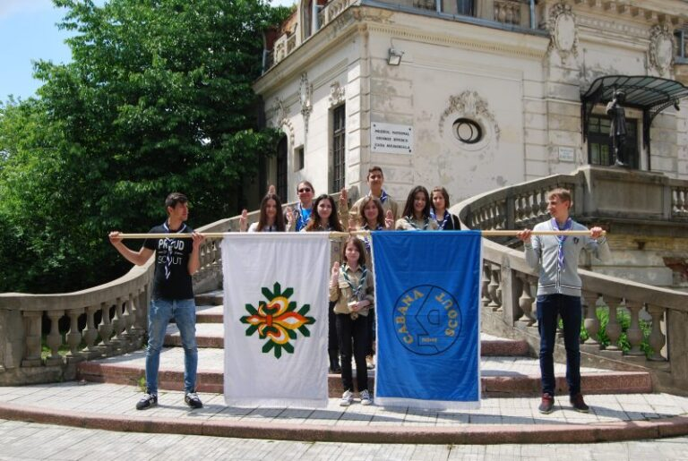

Amintiri de la Promisiunea 2016

Azi este ziua în care mi-am depus Promisiunea, am devenit cercetaș “cu acte în regulă”. Sentimentul de nerăbdare încă e prezent, pentru că deși mi-am depus Promisiunea, voința ce constă în a onora fiecare cuvânt rostit îmi va rămâne mereu alături.
Îmi amintesc că eram atât de nerăbdătoare să înceapă ceremonia pentru depunerea Promisiunii, încât efectiv nu înțelegeam scopul activităților de dinainte. Acum însă sunt foarte fericită că Adi ne-a dat șansa să învățăm și azi lucruri noi, atât despre metoda Scout, cât și despre valorificarea calităților noastre, prin intermediul povestioarelor și al jocurilor, oferindu-ne șansa de a reflecta la motivul pentru care vrem cu adevărat să devenim cercetași.
Revenind la ceremonia de neuitat, după întâlnirea unității, a sosit momentul pe care îl așteptam cu nerăbdare. Îmi aduc aminte și acum băieții care ne întâmpinau cu steaguri la intrarea muzeului, impactul pe care cuvintele “Patriot, Loial, Politicos, Onest…” și celelalte le-au avut asupra mea. Am realizat că doresc cu adevărat să îmi însușesc acele calități în cadrul familiei Cabana Scout.
Îmi amintesc că ne-am așezat în fața liderului, alături de care am rostit Rugăciunea. Am salutat cercetășește și am fost primiți cu un „Bun Venit în marea familie Cercetășească”. Era o liniște extraordinară, îmi auzeam puternic bătăile inimii, în sala luminată de micile pâlpâieli ale lumânărelelor. Fiecare, rând pe rând, rosteam Promisiunea în ordinea grupei de vârstă, ne îndreptam spre Adi de la care primeam eșarfa și spre Petre care ne aștepta cu un frumos cadou de “Bun Venit”. Apoi, ne așezam din nou în rând, pentru a asculta Promisiunea următorilor. Deși întreaga ceremonie s-a desfășurat într-o liniște remarcabilă, momentele trecerii de la o grupă de vârstă la alta au fost marcate de impresionante cântece la pian și violoncel.
Acum, pot spune că Promisiunea reprezintă un reper în viaţă mea de cercetaș, un prilej în plus să reflectez la impactul pe care acțiunile mele îl au asupra celorlalţi – uneori chiar și lipsa acțiunilor. Aşa cum am învățat și ne-am reamintit azi în cadrul ceremoniei, trebuie să lăsăm lumea măcar un pic mai bună decât am găsit-o. Lucru pe care promit, cu ajutorul lui Dumnezeu, pe cuvânt de onoare, să-l aduc printre țelurile vieţii mele. Voi fi Gata Oricând!
de Dayanna Amegică
07.05.2016